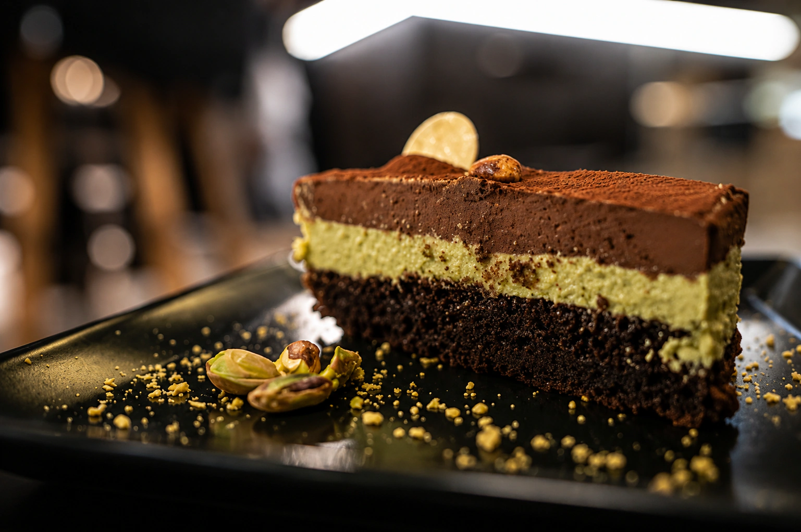
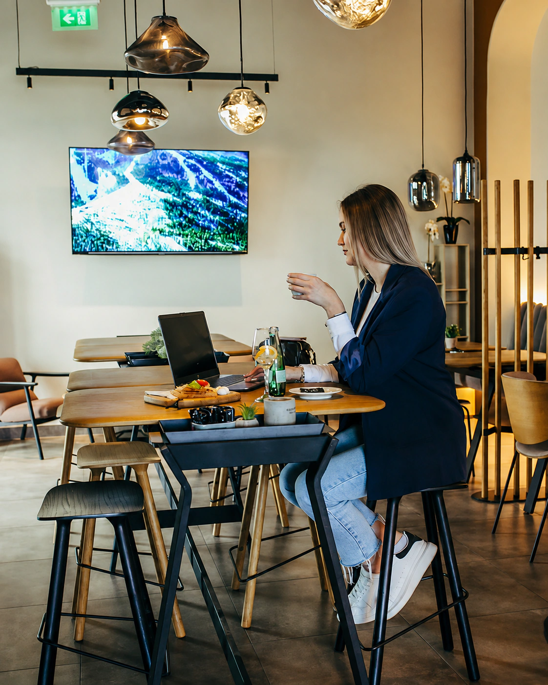
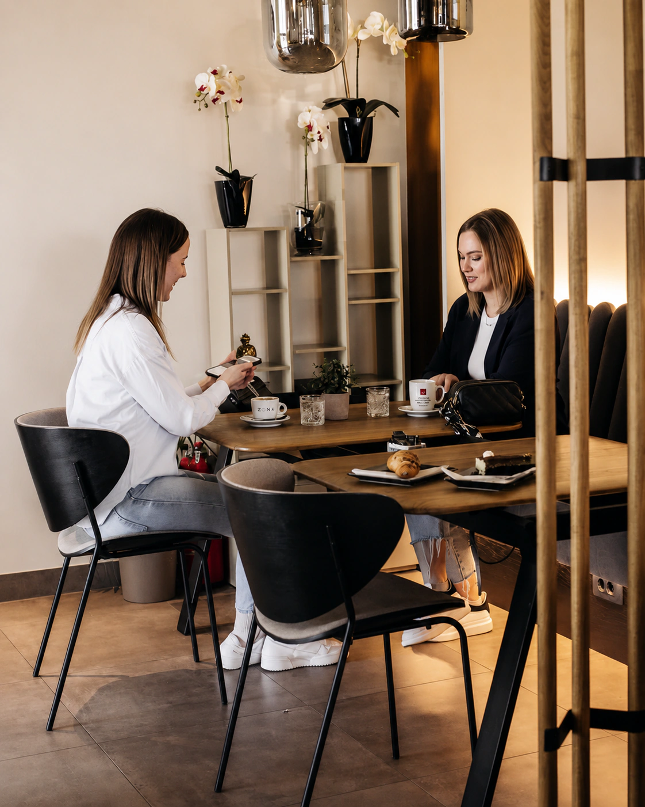

Zona Lounge Bar

Kava.Zalogaj.Dobro društvo.
01 — Zona
Mjesto za dio dana, ne samo kratku pauzu.
Prirodno svjetlo, drvo i industrijski detalji stvaraju otvorenu atmosferu za kavu, zalogaj i druženje.

02 — Coffee & Food
Kava uz nešto slatko.
Zona spaja kavu, piće i hranu u dnevnom ritmu — za kratku pauzu ili duže druženje.
03 — Atmosfera
Dnevni boravak u pokretu.
Za rad uz kavu, susret ili predah. Zona svoj ritam gradi oko dnevnog svjetla i ljudi koji se zadržavaju.

Kava
Dan04 — Galerija
Dan po tvom tempu.
Od prostora do trenutka. Odaberi fotografiju za puni prikaz.
06 — Pronađi nas
Đakovo
STOP SHOP Đakovo
Otvori lokaciju u kartama i pokreni navigaciju.
Pokreni navigaciju ↗